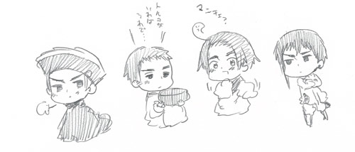

|
どうでも良い4巻小ネタ
>P94でイタちゃんが鬼のようだったとありますがどんな感じだったんですか？？
度重なるヴェネツィア・トルコ戦争で殴ったり殴られたりを繰り返したこの二国。
最盛期ヴェネツィアは艦隊率いてトルコをボコボコにして追い帰し
しぶしぶトルコ側もキリスト教国家に初めての和平の使いをだすことになりました。
のちにヴェネツィアも苦しい状況に立たされるのですが
援軍も来ないのに奮闘するする姿は鬼気迫るものだったようです。
成長するに従ってヘタレ化してしまうのですが…。
＞アメリカ人と〜でアメリカが踊っていた謎のダンス
Stepsの５，６，７，８のダンス
ノリノリだ！
＞モンサンミッシェルの小ネタ
モンサンミッシェルにジャンヌ像があったらしいんだけど
帰ったあとでパンフ見て知りました。
次回こそは見に行きたいです！
ちなみにモンサンミッシェル近辺で食べられるオムレツの
メレンゲっぷりは異常。
＞うねめおんせん
知っているのか雷電！？
＞日丸屋さんはゾンビを倒せたのか？
あのあとペンをとり執筆中に屍人化したため
ゾンビたちも今ではいい酒飲み友達である。
＞ルーマニアさん
やっと出せたハンガリーさんのケンカ相手。
おまじないや魔術が得意。陽気な変わり者。
＞ギリシャに話しかけてたアシンメトリーの人
キプロスさん。
トルコとギリシャのやり取りをため息混じりに見ている。
根は大らかでのんびり屋。
>また、表紙と裏表紙のキャラ数に圧倒されました…！
47人しか居なかったので、残り３人も見たいです♪

残りの三人は大丈夫そうだったらサイトでアップできたら良いな。
裏で出てないミニキャラ５〜６人はいる感じですね。
超次元シンデレラ韓ちゃんもいるよ！
>あんこきらい部
意外だなぁと思うのが納豆、熟寿司みたいな
海外の人には
難易度が高い食材のなかに
あんこもランクインしていること。
知らずに食べてモッハ！ってなってしまう人が多いらしい。
最中上げたら回転してモッハ！ってなったっていう目撃例も。
中華系あんこもなかなか難易度が高いらしい。
世界で放送されてるアニメドラえもんで
ドラえもんが美味しそうに食べるのを見て
憧れのどら焼きをパクッといってモッハってなる人も多い。
ちなみに約一名はどっかのつんつん頭の国の反応みて
ニヤニヤするためだけに入ってるので幽霊部員である。
>島国愛好会
島国とその島国を愛する者で構成される会。
海上要塞も入りたがってる。
|